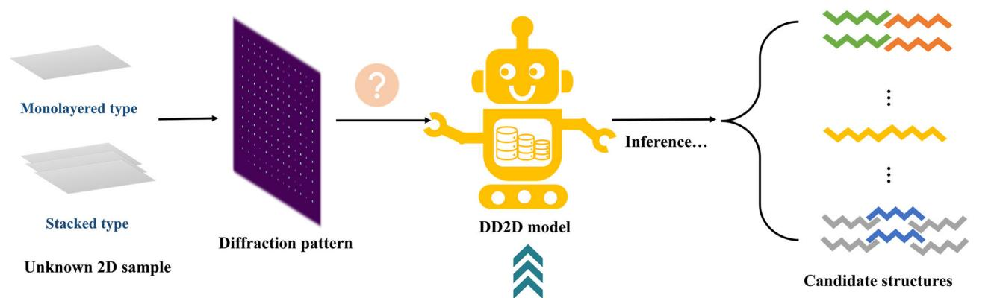
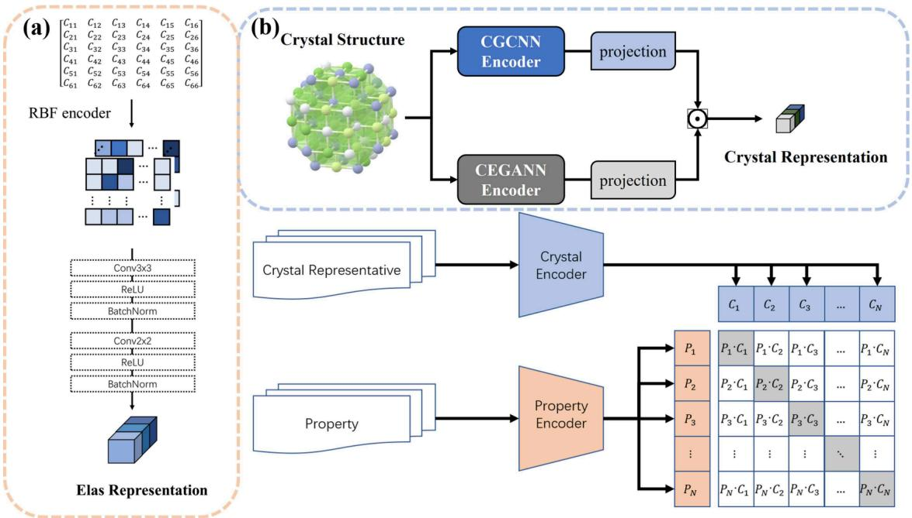
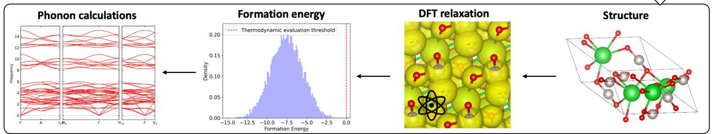
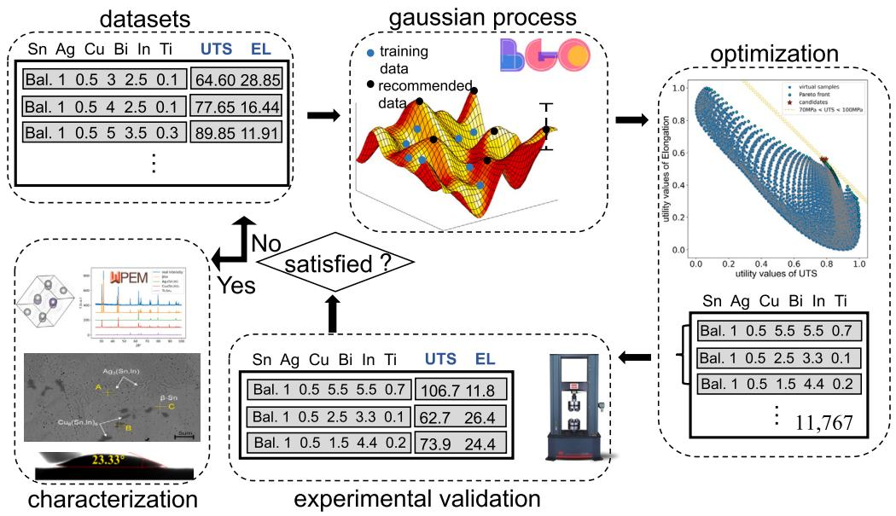
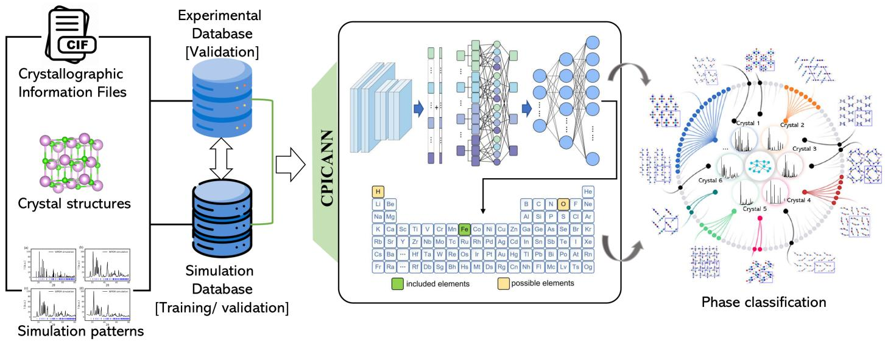
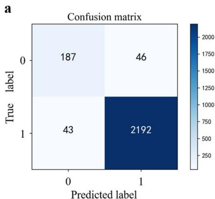
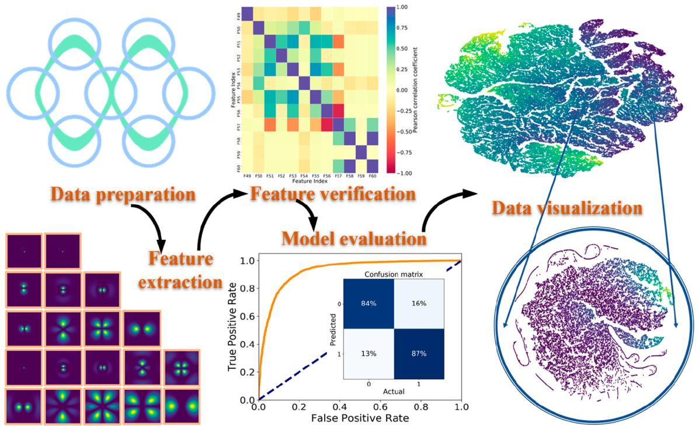
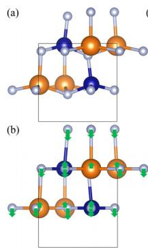

Hi! I'm a PhD candidate at Shanghai University, where I spend my days teaching computers to understand crystals (yes, they're surprisingly stubborn learners). Here's what I'm up to:
🔬 The Mission: Bridging physics and AI to discover new materials faster than traditional methods. Think of it as giving scientists a crystal ball (pun intended) to predict material properties before spending months in the lab.
🧠 The Approach: I build graph neural networks that actually understand crystallographic symmetries—not just memorizing patterns like a parrot, but genuinely learning the physics. It's like teaching AI to think like a physicist, minus the coffee addiction.
🎯 The Goal: Autonomous materials discovery. Imagine AI exploring vast chemical spaces to find next-generation superconductors, batteries, or catalysts while you sleep. We're not quite there yet, but we're getting close!
📚 The Background: Master's in Physics + current PhD in Materials Informatics = the perfect excuse to combine quantum mechanics, machine learning, and way too many Python scripts.
Developing AI-driven approaches for crystal structure prediction, materials property prediction, and accelerated materials discovery using deep learning and active learning strategies.
Creating specialized GNN architectures like ASUGNN for crystal property prediction, incorporating crystallographic symmetries and geometric features into neural network designs.
Integrating physical laws and domain knowledge into neural networks for structure reconstruction from diffraction patterns, learning physics laws, and computational materials design.
Interactive 3D visualization of spherical harmonics used in E(3)-equivariant neural networks. Explore different angular momentum quantum numbers (l) and magnetic quantum numbers (m) with real-time rendering.
Launch Tool Live DemoAdvanced charge density prediction using Projector Augmented Wave (PAW) method integrated with E(3)-equivariant neural networks. Generate high-fidelity representations of crystalline structures with sub-angstrom resolution.
Launch Tool Live DemoAI-powered image editing interface combining XRD diffraction aesthetics with vector database abstractions. Transform and manipulate images using advanced AI models with a cyber-physical design inspired by crystallographic analysis.
Launch Tool






